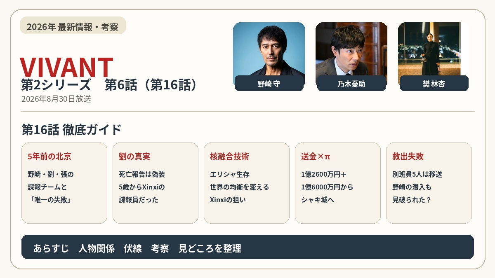
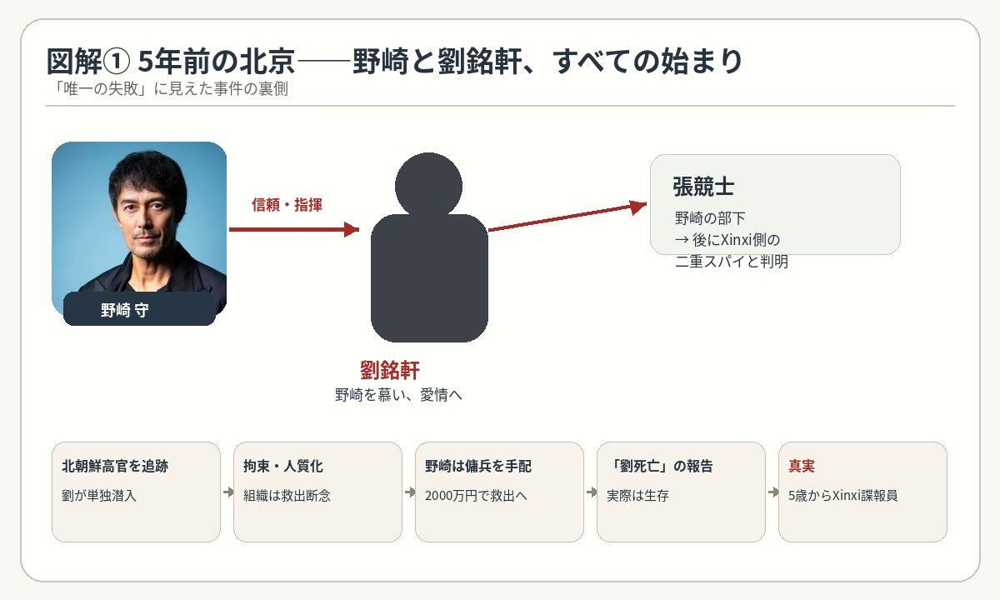
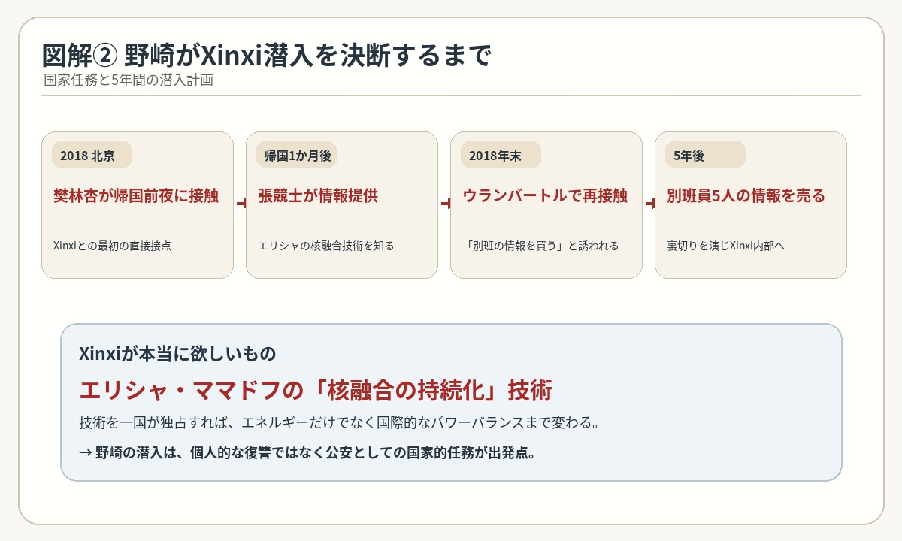
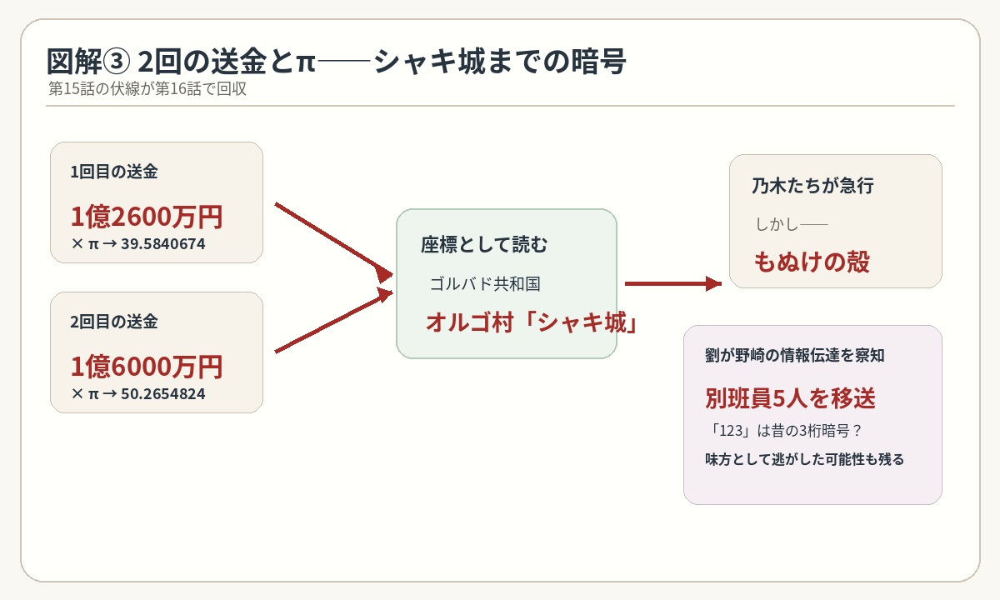

物語の起源は5年前――
愛に生きた男・劉銘軒の真実
第16話は、これまで謎だった野崎守のXinxi（シンシー）潜入の理由が、5年前（2018年）の北京までさかのぼって明らかになった回です。物語上の現在は2023年。最後には、死んだと思われていた劉銘軒（リュウ・ミンシュエン）が生きていたことまで判明します。さらに、別班員5人を救出するため乃木たちが動きますが、シャキ城はすでにもぬけの殻。今回はかなり情報量の多い回です。

1．すべての始まりは5年前――北京で野崎が出会った2人
話は5年前の北京へ戻る。
当時の野崎は、日本大使館で中国公安との連絡を担当するリエゾンとして、北朝鮮関連の諜報活動に携わっていた。
野崎の下には、劉銘軒（リュウ・ミンシュエン）、張競士（チョウ・ケイシ）の2人がいた。
5年前、北京で野崎はこの2人と連携し、北朝鮮高官の動きを追っていた。その中で、劉は野崎を強く慕うようになり、その気持ちはやがて愛情に変わっていった。
しかし野崎は、「天地がひっくり返っても、お前の気持ちには応えられない」と告げていた。
あるとき劉は、追っていた北朝鮮高官が北京に入ったことを突き止める。弾道ミサイルの発射スケジュールを裏付ける証拠をつかむ絶好の機会だった。
劉は、野崎の役に立ちたい、手柄を立てたいという思いから、野崎の「駄目だ、撤退しろ」という命令を押し切って単独で潜入捜査に入る。
しかし、劉は北朝鮮側に捕らえられ、人質になってしまう。
その知らせを受け、佐野公安部長も北京へ入る。野崎と話し合った結果、工作員3名との交換要求に応じれば、劉が日本側のエージェントだと北朝鮮に知られてしまうため、組織としては劉を見捨てるしかないという結論になる。
それでも野崎は諦めなかった。
佐野から予備費として2000万円を工面してもらい、傭兵を雇って劉の救出に動く。監禁されている可能性のある場所を2カ所まで絞り込み、いよいよ突入しようとしたそのとき――。
劉銘軒が死亡したという報告が入る。
野崎にとって、これが後に語る「唯一の失敗」だった。
ところが、その裏には劉銘軒が最初からXinxi（シンシー）側の人間だったという、とんでもない事実が隠されていた。劉はXinxi側のダブルエージェント（二重スパイ）だった。

2．帰国直前、樊林杏が野崎に接触――Xinxi（シンシー）との最初の接点
野崎が北京での任務を終え、日本へ帰国する最後の夜。滞在先のマンションに戻ると、Xinxi（シンシー）の責任者・樊林杏が野崎に接触してくる。
野崎にとって、ここがXinxi（シンシー）との直接的な接点の始まりになる。
樊林杏は野崎の能力や立場を利用しようとしていた。
さらに重要なのが、シンシーが単なるテロ組織ではなく、国家レベルの情報戦を行う巨大な組織だったこと。
野崎はこの時点では、まだシンシーの内部に入るつもりはない。
しかし、この接触が5年後の潜入捜査へつながっていく。
3．日本へ戻った野崎の前に張競士――味方の中にも「別の顔」があった
野崎が日本へ戻った1か月後、今度は張競士（チョウ・ケイシ）から接触を受ける。
ここが非常に面白い。
張競士も劉銘軒と同じくXinxi（シンシー）側のダブルエージェントだったが、組織のやり方に疑問を持っていた。
そして張は、野崎にエリシャの写真を見せて、核融合技術の開発情報を流してきた。
シンシーの目的は、世界情勢を一変させ得る、7年前に自死したとされる核融合研究者エリシャ・ママドフの「核融合の持続化」の発明を手に入れること。
しかし欧米・EU・日本の別班は、その発明をデマだと分析。各国の諜報員がエリシャの行方を追う中、発明は失敗していたという情報が世界中を駆けめぐる。その後、シリアでエリシャの遺体が発見される。
ところが遺体発見から3か月後、実は存命だったエリシャが情報ブローカーによって捕獲される。エリシャは生きていた。
発明を手中に収めたいシンシーがエリシャと交渉中で、エリシャ・ママドフが組織テントに関する条件を出していると描かれた。
ハンが、解体されたテントの情報に重大な関心を示している理由でもある。
そして、エリシャ・ママドフの条件が、「奇跡の少女」とされるジャミーンなのか。
もし中国側がこの技術を独占すれば、国際的なパワーバランスそのものが変わってしまう。
そこで野崎守は、Xinxi（シンシー）への潜入を決断する。
これは公安としての国家的な任務だった。

4．5年後――樊林杏から何度も連絡、「シンシーの仲間になれ」
そして現在につながる。
2018年の暮れ、野崎がテントの調査でウランバートルに出張した際、樊林杏は野崎に再び接触してきた。野崎に対して、別班の情報を買うと告げた。
ウランバートルでの接触から2か月後、公安は野崎がダブルエージェントである可能性も疑い、公安内部に監視カメラを設置した。
機密会議は、元公安員の女将がいる月島のもんじゃ焼き店「おふだや」で行った。
野崎はバルカ共和国で2年間テントを追いながら、別班が現れるのを待った。
バルカから帰国後も、樊林杏は野崎に何度も頻繁に電話をかけてきた。
ここで野崎は、ついにその誘いを利用し、別班員を売る代わりに、自分の身の安全を保証するよう約束させた。
ただし、シンシーに入るには当然ながら信用が必要。
そこで野崎が利用したのが、別班の情報だった。
佐野部長は櫻井最高司令官に「あなたならどうする」と質問し、櫻井からは核融合を優先するという答えが返ってきた。
シンシーにとって別班は非常に価値の高い情報。
だから野崎は、「別班員を売る男」になることで、シンシーから信用を得ようとする。
第14～15話で野崎が本当に裏切ったように見えたのは、この潜入作戦だった。
ただし、ここには大きなリスクがある。別班員を犠牲にする可能性まで含めて、野崎は作戦を進めていた。
5．1億2600万円＋1億6000万円――2回の送金が「場所」を示していた
ここは第15話から続いていた伏線が、ついに回収される。
野崎から東条の口座へ、1億2600万円、さらに翌日、1億6000万円の2回の送金が行われていた。
乃木たちは、この数字に第15話で出てきた「π」を組み合わせる。
そしてAIハヤトに、振込額 × πを計算させ、座標として読み取る。
1億2600万円 × π からは39.5840674、1億6000万円 × π からは50.2654824という数字が導かれる。
2回の送金から得られた数字を組み合わせることで、場所がかなり絞り込まれる。
その結果、出てきたのが、
だった。
第15話で「1億2600万円は暗号ではないか」と考察したものが、ここで実際につながった形になる。
6．死んだはずの劉銘軒が目の前に――しかも最初からシンシー側だった
そして第16話最大の衝撃。
ポリグラフ検査を受けて合格した後、野崎の前に現れたのは、
顔には大きな傷が残っている。
野崎は5年前の2018年、劉銘軒が北朝鮮で拘束されたと知り、傭兵まで雇って救出しようとしていた。
交渉のタイムリミット直前にシンシーのエージェントであると明かし、劉は命拾いした。
しかし野崎に届いた情報は、「劉は死亡した」というものだった。
野崎はそれを信じていた。ところが実際は違った。
劉銘軒は、捕まってからシンシーに寝返ったのではない。
なんと、5歳からシンシーの諜報員として育てられていた。
諜報員は、その土地で育った人間にやらせるのが最も理にかなっている。
つまり野崎が5年前に「自分の部下」として接していた時点で、すでにシンシー側のダブルエージェント（二重スパイ）だった。
野崎は5年間騙されていたのではなく、出会った最初から騙されていた。
お金のためにシンシーに接触したと話す野崎に、劉銘軒は「私に嘘はつかないで!!」とビンタをくらわせる。
ここが第16話の「愛に生きた男の真実」にもつながっている。
7．シャキ城を突き止めたのに……別班員5人はすでに移送されていた
ブルーウォーカー・太田梨歩が衛星をハッキングする。すると、シャキ城から別班員が移送されることが分かる。リュウが手配したのだ。
リュウは野崎の行動を監視し、野崎が飲食店のトイレから見える電光掲示板を通して「シャキ城」という情報を得たことを突き止めていた。
つまり、野崎のダブルエージェントとしての動きは見破られていたことになる。
「ついに別班員5人を救出できる」と思わせる。
しかし――。
そしてこの結果、野崎の潜入がかなり危険な状態に入ったことも分かる。
一方で、「IQ123」という数字には非常に違和感が残る。123は極めて高いIQを示す数字というわけではない。
5年前の野崎の諜報チームは頻繁に3桁の数字を暗号として使っており、劉は自分を「767」、アジトを「986」と呼んでいた。
そのため「123」も、劉が野崎に、自分たちにしか分からない昔の暗号を使って何かを伝えたと考察できる。
劉は、5年前に潜入に失敗した際、野崎が傭兵を集めて救出しようとしたことも把握していた。
だから、劉が今でも野崎の忠実な味方で、わざと別班員たちを移送し、警護が薄い状況を作ったという見方も残る。

8．「エリシャの核融合技術」――シンシーが本当に欲しいもの
ここからが第16話で新しく見えてきた大きなテーマ。
シンシーが追っているのは、単なる情報でも金でもない。
エリシャは一度、「発明はデマだった」「自殺した」とされていた。
ところが実際には生きていて、樊林杏とも接触していたことが分かる。
この技術が本物なら、エネルギー事情だけでなく、世界の国際関係まで変えてしまう。
だから中国側に独占させないために、野崎はシンシーへの潜入を決断した。
ここで重要なのは、野崎の潜入の出発点は、劉銘軒への個人的な思いではなかったということ。
まず国家規模の任務があり、その途中に「劉銘軒を救えなかった」という個人的な後悔が重なっている。
この二重構造になっている。
9．野崎が5年間追っていた「テント」の意味まで変わってくる
第1シリーズで野崎は、ずっとテントを追っていた。
当時は、「公安として国際テロ組織テントを追っている」としか見えなかった。
しかし第16話まで見た後では、少し違って見える。
野崎が本当に探していたのは、シンシーに潜入するための「別班への接点」だった。
シンシーから信用を得るには、別班の情報が必要だった。だから野崎は別班につながる情報を探していた。
その過程でテントを追うことで、結果的に乃木と出会った――。
もしこれが正しければ、
第1シリーズの物語そのものが、第2シリーズのシンシー潜入につながっていた可能性がある。
これはかなり大きな伏線の再解釈だと思う。
10．最後に「公安と別班」が手を組む――そして櫻井の「断念」
第16話の最後は、これまでとは違う動きになる。
これまで別々に動いていた、公安と別班。
この2つが、今回の事件では協力する方向へ進む。
そして最後に櫻井司令の声。
という言葉が入る。
ただし、「何を断念するのか」は、この時点では明かされない。
ここが第16話最後の新しい謎。
11．第16話を見終わっての私の考察
今回、一番大きかったのは「野崎が裏切っていなかった」ことの確認ではないと思う。
本当に大きいのは、
野崎は敵の中に入ったつもりだった。
ところが実際には、自分のすぐそばに、5年前からシンシー側の二重スパイが潜り込んでいた。
さらに、野崎が情報を流していることまで劉に見抜かれてしまった。
だから第17話では、「野崎はシンシーから無事に脱出できるのか」がまず大きな問題になる。
そしてもう一つ。
劉銘軒は野崎を本当に憎んでいるのか？
ここも重要だと思う。
劉は野崎を裏切っていた。しかし同時に、野崎を愛していた。
敵として野崎を追い詰めながら、感情の部分では野崎を特別視している。
この矛盾が、今後の展開でかなり大きく効いてくる気がする。
そして、別班員5人はどこへ移送されたのか。
シャキ城の座標は正しかった。つまり、乃木たちは間違っていない。
ただ一歩遅かった。
この「一歩遅れた理由」が劉銘軒にある以上、次は野崎と劉の直接対決がかなり重要になりそうだ。
第16話は、5年前の謎をかなり回収した一方で、「エリシャの核融合技術」「ジャミーンと孤児院」「劉銘軒の5歳以前」「シャキ城から移送された5人の行方」という新しい謎を一気に残した回だったと思う。